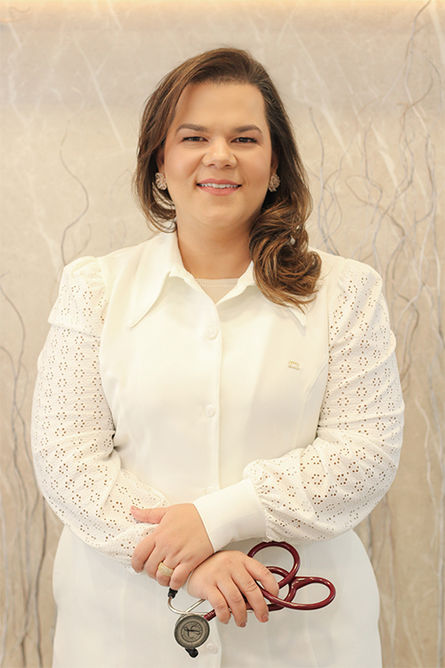

SOBRE MIM
Dra. Maria Cecília Sales Mendes Prates
Um atendimento humanizado, acolhedor e ético é a minha prioridade.
Sou formada em Medicina pelo Instituto de Ciências da Saúde – FUNORTE em Montes Claros, especialista em Clínica Médica pela Universidade Federal do Vales do Jequitinhonha e Mucuri, na Santa Casa de Diamantina e em Nefrologia pela Santa Casa de Misericórdia de Montes Claros.
A escolha da Medicina se deu por vocação e a Nefrologia por paixão! Como médica, atuei na Saúde da Família e Comunidade em cidades do interior do Norte de Minas, como plantonista do CTI da Santa Casa de Caridade de Diamantina por 10 anos e atuo como nefrologista e professora na cidade de Diamantina.
Faço parte da equipe de Nefrologia da Hemodiálise da Santa Casa de Caridade de Diamantina, sou Nefrologista plantonista do CTI da Santa Casa de Diamantina e do Hospital Nossa Senhora da Saúde, atendo em consultório e sou professora assistente da Faculdade de Medicina da Universidade Federal dos Vales do Jequitinhonha e Mucuri.
A experiência integrada como nefrologista, na medicina intensiva de CTI e como professora, me trouxe um olhar amplo sobre a saúde, com atenção nos aspectos tanto da prevenção quanto do tratamento clínico, baseada em uma medicina de evidencias cientificas e praticada de forma individualizada.
Como nefrologista atuo na prevenção e tratamento de doenças relacionadas aos rins e trato urinário, que acometem muitas pessoas, como a infecção urinária, nefrolitíase, nefrites, glomerulonefrites e insuficiência renal.
Um atendimento humano, acolhedor e atento! A minha missão é fazer com que a sua saúde seja cuidada de forma individualizada e segura. Assim, durante a consulta e acompanhamento, todas as suas expectativas e anseios quanto ao diagnóstico e tratamento serão atentamente ouvidos e considerados para que, em conjunto e com total alinhamento, seja sugerido o melhor tratamento a ser seguido.
Os rins recebem cerca de 1,2L de sangue por minuto, podemos dizer que eles filtram todo o sangue de uma pessoa 12 vezes por hora, removendo resíduos tóxicos do organismo. Eles também regulam a pressão arterial, estimulam a produção de glóbulos vermelhos, atuam na formação e manutenção dos ossos.
Desta forma, o correto é procurar o especialista em rins mesmo sem apresentar problemas, com o objetivo de prevenir qualquer tipo de alteração que possa afetá-los.
Recomenda-se que todos os homens e mulheres acima de 40 anos realizem, anualmente, um check up com nefrologista.
Especialmente para as pessoas com histórico pessoal ou familiar de câncer, diabetes, hipertensão, doenças renais ou que apresentem sintomas aparentes como sangue na urina, dor ao urinar, urina espumosa, mudança na cor, odor e volume da urina, alteração nos hábitos urinários (como acordar mais de uma vez a noite para ir ao banheiro), dor nas costas, inchaços frequentes nos pés e tornozelos, o médico nefrologista dever ser procurado o mais breve para o devido acompanhamento, preventivo ou para tratamento.
ÁREAS DE ATUAÇÃO
• Infecção Urinária;
• Hematúria;
• Proteinúria;
• Nefrolitíase (Cálculo Renal);
• Cistos Renais;
• Nefrites.
ÁREAS DE ATUAÇÃO
• Glomerulonefrites;
• Pielonefrites;
• Insuficiência Renal Aguda;
• Insuficiência Renal Crônica
• Edemas/retenção de líquidos.
• Hipertensão Arterial;
• Diabetes.